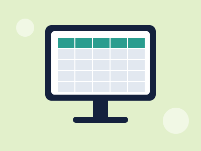
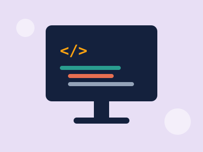
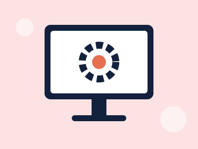

Iniciante 20 horas
Ligar o computador, usar o mouse e o teclado, organizar arquivos e pastas.
A Conecta Procópio é uma ONG de Cornélio Procópio que recebe computadores doados, recondiciona e entrega para famílias e escolas que não têm acesso à tecnologia. Também oferecemos cursos gratuitos para que cada pessoa aprenda a usar o computador e a internet com segurança.
Quero participarEmpresas e pessoas doam computadores e peças que não usam mais.
Voluntários consertam, atualizam e testam cada equipamento.
Os computadores vão para famílias e escolas cadastradas na ONG.
Quem recebe pode fazer nossos cursos gratuitos de informática.
Iniciante 20 horas
Ligar o computador, usar o mouse e o teclado, organizar arquivos e pastas.
Iniciante 12 horas
Navegar, usar e-mail e reconhecer golpes e notícias falsas.

Intermediário 24 horas
Editor de textos e planilhas para o trabalho, a escola e o pequeno negócio.

Jovens 40 horas
Primeiros passos em lógica de programação e criação de páginas web.

Intermediário 30 horas
Montagem, troca de peças e instalação de sistemas. Uma porta para o primeiro emprego.
Todos 8 horas
Montar um currículo digital e se candidatar a vagas pela internet.
O ODS 9 – Indústria, Inovação e Infraestrutura inclui a meta de aumentar o acesso às tecnologias de informação e comunicação. A Conecta Procópio contribui com esse objetivo de três formas:
Saiba mais sobre o ODS 9 no site da ONU Brasil.